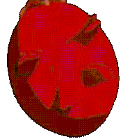
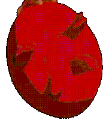

Berserk is a Japanese manga series written and illustrated by Kentaro Miura. Set in a medieval Europe-inspired dark fantasy world, the story centers on the characters of Guts, a lone swordsman, and Griffith, the leader of a mercenary band called the "Band of the Hawk". Miura premiered a prototype of Berserk in 1988. As of May 2021, the Berserk manga had over 50 million copies in circulation, including digital versions, making it one of the best-selling manga series of all time. Berserk has been widely acclaimed, particularly for its dark setting, storytelling, characters, and Miura's detailed artwork.